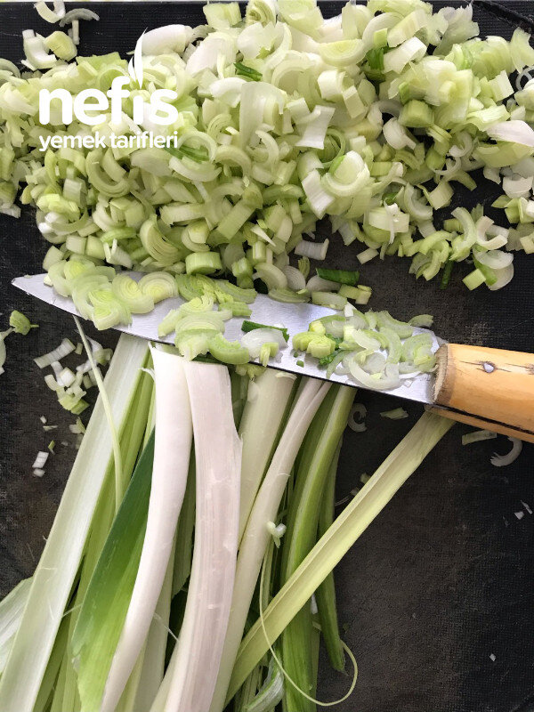

🍽️ 12-14 kişilik⏱️ Hazırlık: 1 sa🔥 Pişirme: 45 dk🏷️ Diğer Tarifler🏷️ Derin Dondurucuda Saklananlar
Malzemeler
- 2,5 kg pırasa
- 1 lİtre su
- 2 yemek kaşığı tuz
- Alabildiği kadar un
- 2-3 bardak zeytinyağı
Hazırlanışı
- Pırasalar önce dörde bölünür sonra ince ince doğranır.
- Doğranan pırasalar 2-3 kaşık sıvı yağda azar azar 4-5 turda hızlı ateşte 2-3 dakika sotelenir.
- Pırasaların tamamı sotelendikten sonra hamur hazırlanır.
- Unun üzerine 2 yemek kaşığı tuz ve 1 lt hafif ılık su ilave edilerek hamur hazırlanır.
- İyice yoğurulan hamur bezelere ayrılır (80 adet ) Yuvarlanan bezeler 10 arlı guruplanır.
- Bezeler yaklaşık pasta tabağı büyüklüğünde açılır. Araları 1- 1, 5 kaşık yağ ile yağlanarak 10 beze tamamlanır.
- Bütün bezeler hazırlandığında 8 gurup hazırlanmış olacak.
- İlk yağladığımız hamurdan başlayarak hamurları biraz oklava yardımıyla, biraz da ellerimizle büyütelim.
- İncelttiğimiz yufkayı sekize bölelim. Geniş tarafına bir dolu kaşık pırasa harcımızı koyalım.
- İki yanından biraz katlayarak yuvarlayıp rulo yapalım. Dörderli olarak poşetlenir. Uygun bir noftost kabına yerleştirilir.
- Dondurucuya koyduğumuz böreklerimizi istediğimiz zaman istediğimiz miktarda üzerini yağlayarak 200 derecede üzeri kızarana kadar pişirebiliriz. Mis kokulu böreklerimiz hazır. Afiyet olsun😊.